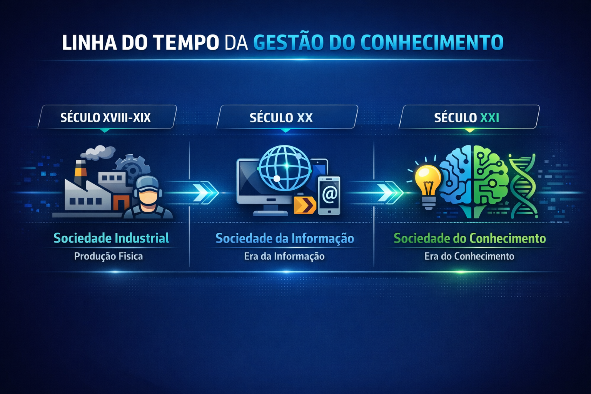

A Sociedade do Conhecimento é um modelo de organização social e econômica em que o principal recurso estratégico deixa de ser a força física ou o capital industrial e passa a ser o conhecimento.
Ela surge como evolução da Sociedade Industrial e da Sociedade da Informação.
🔎 Características principais:
O conhecimento é o principal ativo econômico
Inovação constante
Aprendizado contínuo (lifelong learning)
Forte uso de tecnologia
Trabalho intelectual predominante
Valorização de criatividade e resolução de problemas
EVOLUÇÃO HISTÓRICA

🔹 Revolução Industrial (século XVIII – XIX)
Máquina a vapor
Produção em massa
Trabalho repetitivo
Valor = produção física
🔹 Sociedade da Informação (século XX)
Computadores
Internet
Armazenamento e circulação de dados
Valor = acesso à informação
🔹 Sociedade do Conhecimento (século XXI)
Inteligência artificial
Big Data
Computação em nuvem
Valor = capacidade de interpretar, aplicar e inovar a partir da informação
👉 Diferença fundamental:
Na Sociedade da Informação você tem acesso aos dados.
Na Sociedade do Conhecimento você sabe transformar esses dados em vantagem competitiva.
O PAPEL DE PETER DRUCKER
Peter Drucker foi um dos principais teóricos que popularizou o conceito.
Ele introduziu o termo:
👨💻 Trabalhador do Conhecimento
Profissional que:
Usa o cérebro mais do que a força física
Resolve problemas complexos
Toma decisões estratégicas
Gera inovação
👉 Um desenvolvedor de software é um exemplo clássico de trabalhador do conhecimento.
SOCIEDADE DA INFORMAÇÃO x SOCIEDADE DO CONHECIMENTO
Sociedade da Informação
Sociedade do Conhecimento
Foco na tecnologia
Foco na inteligência humana
Dados disponíveis
Dados transformados em solução
Acesso à informação
Aplicação estratégica da informação
Infraestrutura
Inovação
💻 Exemplo na Engenharia de Software:
Ter acesso ao GitHub = Sociedade da Informação
Saber analisar, entender arquitetura e melhorar código = Sociedade do Conhecimento
O CONHECIMENTO COMO ATIVO ECONÔMICO
Antes:
Terra
Máquinas
Fábricas
Hoje:
Algoritmos
Patentes
Dados
Know-how técnico
Marca
Capital intelectual
📊 Ativos Intangíveis
Empresas de tecnologia têm maior valor nos ativos intangíveis do que nos físicos.
Exemplo:
Código-fonte
Modelo de negócio digital
Banco de dados
Expertise dos desenvolvedores
👉 Isso explica o valor de mercado altíssimo das empresas de tecnologia.
CAPITAL INTELECTUAL
É o conjunto de conhecimentos que gera valor para a organização.
Divide-se em:
🔹 Capital Humano
Conhecimento das pessoas (ex: desenvolvedores, arquitetos de software)
🔹 Capital Estrutural
Processos, documentação, sistemas (ex: repositórios, documentação técnica, base de conhecimento)
🔹 Capital Relacional
Relacionamento com clientes e parceiros (ex: comunidade open source, feedback de usuários)
TRANSFORMAÇÃO DIGITAL
Transformação Digital não é apenas usar tecnologia.
É mudar a cultura organizacional usando tecnologia.
Componentes principais:
🔹 Integração de Sistemas
APIs
Cloud Computing
Microserviços
🔹 Automação Inteligente
IA
Machine Learning
DevOps
CI/CD
🔹 Cultura Data-Driven
Decisões baseadas em métricas:
KPIs de software
Métricas ágeis
Performance
Dados de usuário
👉 O engenheiro de software precisa entender que tecnologia é meio, não fim.
BIG TECHS E GESTÃO DO CONHECIMENTO
As grandes empresas dominam o ciclo da GC:
Capturam dados
Transformam em informação
Geram conhecimento
Aplicam rapidamente
Inovam
Repetem o ciclo
Isso gera:
Escala
Vantagem competitiva
Crescimento exponencial
IMPACTOS NA EDUCAÇÃO
A educação tradicional baseada em memorização perde espaço.
Agora é necessário:
Aprender a aprender
Pensamento crítico
Resolução de problemas
Trabalho colaborativo
Comunicação
Aprendizagem baseada em projetos (PBL)
Na Engenharia de Software isso aparece em:
Projetos reais
Hackathons
Metodologias ágeis
Trabalho em equipe
IMPACTOS NA ENGENHARIA DE SOFTWARE
A Sociedade do Conhecimento exige que o engenheiro:
✔ Documente bem
✔ Compartilhe conhecimento
✔ Trabalhe colaborativamente
✔ Aprenda continuamente
✔ Use dados para tomar decisões
✔ Inove constantemente
Sem Gestão do Conhecimento:
Código se perde
Equipe depende de uma pessoa
Conhecimento vai embora com funcionários
Projetos fracassam
DESAFIOS DA SOCIEDADE DO CONHECIMENTO
Excesso de informação (infoxicação)
Obsolescência rápida
Necessidade de atualização constante
Segurança da informação
Fake news e manipulação de dados
Desigualdade digital
CONCLUSÃO E VISÃO ESTRATÉGICA
A Sociedade do Conhecimento representa uma mudança estrutural profunda:
Não vence quem tem mais máquinas.
Vence quem aprende mais rápido.
Vence quem compartilha melhor.
Vence quem transforma conhecimento em inovação.
Para você como estudante de Engenharia de Software:
👉 Seu maior ativo não é seu notebook.
👉 É sua capacidade de aprender, analisar e aplicar conhecimento.